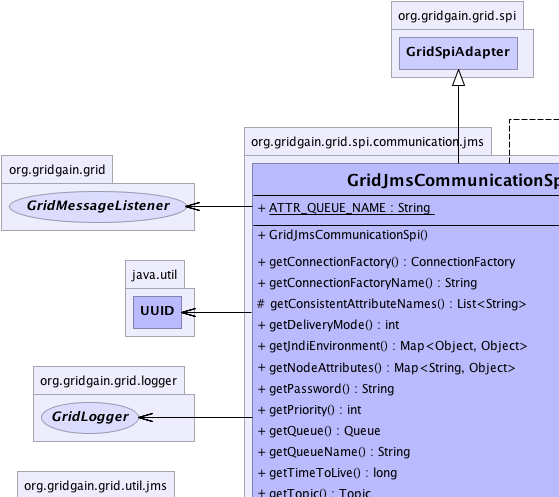
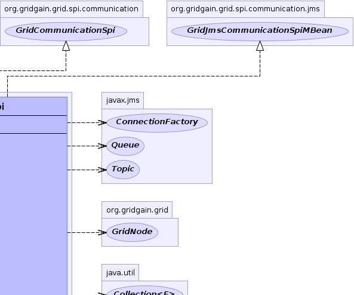
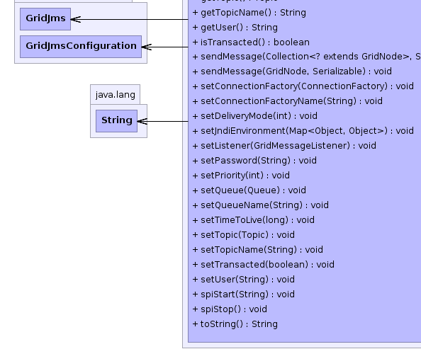
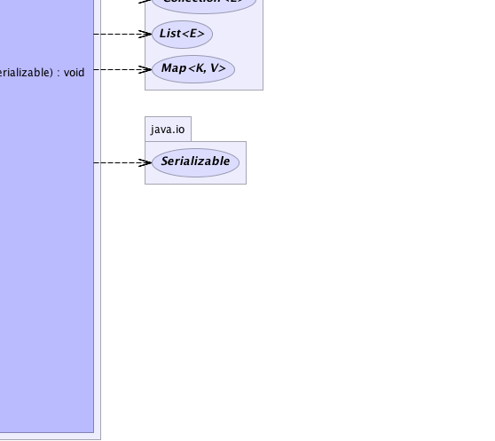

org.gridgain.grid.spi.GridSpiAdapter
org.gridgain.grid.spi.communication.jms.GridJmsCommunicationSpi
org.gridgain.grid.spi.GridSpiAdapter
org.gridgain.grid.spi.communication.jms.GridJmsCommunicationSpi
|
GridGain™ 3.0.9c
Community Edition |
|||||||||
| PREV CLASS NEXT CLASS | FRAMES NO FRAMES | |||||||||
| SUMMARY: NESTED | FIELD | CONSTR | METHOD | DETAIL: FIELD | CONSTR | METHOD | |||||||||
java.lang.Object
@GridSpiInfo(author="GridGain Systems, Inc.",
url="www.gridgain.com",
email="support@gridgain.com",
version="3.0.9c.27052011")
@GridSpiMultipleInstancesSupport(value=false)
public class GridJmsCommunicationSpi
JMS implementation of GridCommunicationSpi. This implementation uses
JMS topic and queue to send messages to an individual node
or to a group of remote nodes.
Note that queue is optional. If provided, then queue will
be used for sending messages to a single node
(method GridJmsCommunicationSpi.sendMessage(GridNode, Serializable), otherwise
topic will be used in which case messages will be sent to all
nodes, but only destination node will process them and others will ignore
them. Topic is always used for communication with more than one node
(method GridJmsCommunicationSpi.sendMessage(Collection, Serializable).
Both, topic and queue will be first obtained from JNDI lookup.
GridJmsCommunicationSpi.setConnectionFactoryName(String))GridJmsCommunicationSpi.setJndiEnvironment(Map))GridJmsCommunicationSpi.setConnectionFactory(ConnectionFactory))GridJmsCommunicationSpi.setDeliveryMode(int))GridJmsCommunicationSpi.setPriority(int))GridJmsCommunicationSpi.setTimeToLive(long))GridJmsCommunicationSpi.setQueueName(String))GridJmsCommunicationSpi.setQueue(Queue))GridJmsCommunicationSpi.setTopicName(String))GridJmsCommunicationSpi.setTopic(Topic))GridJmsCommunicationSpi.setTransacted(boolean))GridJmsCommunicationSpi.setUser(String))GridJmsCommunicationSpi.setPassword(String))
GridJmsCommunicationSpi commSpi = new GridJmsCommunicationSpi();
// JNDI connection factory name.
commSpi.setConnectionFactoryName("java:ConnectionFactory");
// JNDI environment mandatory parameter.
Map<Object, Object> env = new Hashtable<Object, Object>(3);
env.put(Context.INITIAL_CONTEXT_FACTORY, "org.jnp.interfaces.NamingContextFactory");
env.put(Context.PROVIDER_URL, "jnp://localhost:1099");
env.put(Context.URL_PKG_PREFIXES, "org.jboss.naming:org.jnp.interfaces");
commSpi.setJndiEnvironment(env);
// JNDI topic name.
commSpi.setTopicName("topic/myjmstopic");
GridConfigurationAdapter cfg = new GridConfigurationAdapter();
// Override default communication SPI.
cfg.setCommunicationSpi(commSpi);
// Starts grid.
G.start(cfg);
<bean id="grid.custom.cfg" class="org.gridgain.grid.GridConfigurationAdapter" singleton="true">
...
<property name="communicationSpi">
<bean class="org.gridgain.grid.spi.communication.jms.GridJmsCommunicationSpi">
<property name="connectionFactoryName" value="java:ConnectionFactory"/>
<property name="topicName" value="topic/myjmstopic"/>
<property name="jndiEnvironment">
<map>
<entry>
<key><util:constant static-field="javax.naming.Context.INITIAL_CONTEXT_FACTORY"/></key>
<value>org.jnp.interfaces.NamingContextFactory</value>
</entry>
<entry>
<key><util:constant static-field="javax.naming.Context.PROVIDER_URL"/></key>
<value>jnp://localhost:1099</value>
</entry>
<entry>
<key><util:constant static-field="javax.naming.Context.URL_PKG_PREFIXES"/></key>
<value>org.jboss.naming:org.jnp.interfaces</value>
</entry>
</map>
</property>
</bean>
</property>
...
</bean>
Note: JMS provider is not shipped with GridGain. If you don't have JMS, you need to
download it separately. To download JMS provider see http://en.wikipedia.org/wiki/Java_Message_Service#JMS_Provider_Implementations
for more details. Once installed, JMS provider should be available on the classpath for
GridGain. If you use ${GRIDGAIN_HOME}/bin/ggstart.{sh|bat} script to start
a grid node you can simply add JMS JARs to ${GRIDGAIN_HOME}/bin/setenv.{sh|bat}
scripts that's used to set up class path for the main scripts.
This release of GridGain has been tested with:
Note: When using JMS-based SPIs (communication or discovery) you cannot start
multiple GridGain instances in the same VM due to possible limitations of JMS providers. GridGain runtime
will detect this situation and prevent GridGain from starting in such case.
See GridSpiMultipleInstancesSupport for details.

For information about Spring framework visit www.springframework.org
| Wiki | |
| Forum |
GridCommunicationSpi
|  |  |
|  |  |
| Field Summary | |
|---|---|
static String |
ATTR_QUEUE_NAME
Name of the node attribute that refers to the queue name (value is grid.jms.queue.GridJmsCommunicationSpi). |
| Constructor Summary | |
|---|---|
GridJmsCommunicationSpi()
|
|
| Method Summary | |
|---|---|
javax.jms.ConnectionFactory |
getConnectionFactory()
Returns JMS connection factory. |
String |
getConnectionFactoryName()
Returns name of the JMS connection factory in JNDI tree. |
protected List<String> |
getConsistentAttributeNames()
Returns back a list of attributes that should be consistent for this SPI. |
int |
getDeliveryMode()
Gets messages delivery mode. |
Map<Object,Object> |
getJndiEnvironment()
Gets naming context variables which are used by node to establish JNDI tree connection. |
Map<String,Object> |
getNodeAttributes()
This method is called before SPI starts (before method GridSpi.spiStart(String)
is called). |
String |
getPassword()
Gets JMS connection password for connectivity authentication. |
int |
getPriority()
Gets messages delivery priority as defined in Message. |
javax.jms.Queue |
getQueue()
Gets JMS queue. |
String |
getQueueName()
Gets JNDI name for JMS queue. |
long |
getTimeToLive()
Gets messages lifetime. |
javax.jms.Topic |
getTopic()
Gets JMS topic. |
String |
getTopicName()
Gets JNDI name of the JMS topic. |
String |
getUser()
Gets JMS connection user name for connectivity authentication. |
boolean |
isTransacted()
Indicates whether JMS messages are transacted or not. |
void |
sendMessage(Collection<? extends GridNode> destNodes,
Serializable msg)
Sends given message to destination nodes. |
void |
sendMessage(GridNode destNode,
Serializable msg)
Sends given message to destination node. |
void |
setConnectionFactory(javax.jms.ConnectionFactory factory)
Sets JMS connection factory. |
void |
setConnectionFactoryName(String factoryName)
Sets the JNDI name of JMS connection factory. |
void |
setDeliveryMode(int deliveryMode)
Sets message delivery mode. |
void |
setJndiEnvironment(Map<Object,Object> jndiEnv)
Sets JNDI environment properties. |
void |
setListener(GridMessageListener lsnr)
Set communication listener. |
void |
setPassword(String pswd)
Sets password to establish connection with JMS server. |
void |
setPriority(int priority)
Sets message delivery priority. |
void |
setQueue(javax.jms.Queue queue)
Sets JMS queue. |
void |
setQueueName(String qName)
Sets JNDI name for JMS queue. |
void |
setTimeToLive(long ttl)
Sets message time-to-live (in milliseconds). |
void |
setTopic(javax.jms.Topic topic)
Sets JMS topic. |
void |
setTopicName(String tName)
Sets JNDI name for JMS topic. |
void |
setTransacted(boolean transacted)
Indicates whether JMS messages are transacted or not. |
void |
setUser(String user)
Sets user name which is used for connection establishing. |
void |
spiStart(String gridName)
This method is called to start SPI. |
void |
spiStop()
This method is called to stop SPI. |
String |
toString()
|
| Methods inherited from class org.gridgain.grid.spi.GridSpiAdapter |
|---|
assertParameter, configInfo, createSpiAttributeName, getAuthor, getGridGainHome, getLocalNodeId, getName, getSpiContext, getStartTimestamp, getStartTimestampFormatted, getUpTime, getUpTimeFormatted, getVendorEmail, getVendorUrl, getVersion, injectables, onContextDestroyed, onContextInitialized, registerMBean, setJson, setName, startInfo, startStopwatch, stopInfo, unregisterMBean |
| Methods inherited from class java.lang.Object |
|---|
clone, equals, finalize, getClass, hashCode, notify, notifyAll, wait, wait, wait |
| Methods inherited from interface org.gridgain.grid.spi.GridSpi |
|---|
getName, onContextDestroyed, onContextInitialized |
| Methods inherited from interface org.gridgain.grid.spi.GridSpiJsonConfigurable |
|---|
setJson |
| Methods inherited from interface org.gridgain.grid.spi.GridSpiManagementMBean |
|---|
getAuthor, getGridGainHome, getLocalNodeId, getName, getStartTimestamp, getStartTimestampFormatted, getUpTime, getUpTimeFormatted, getVendorEmail, getVendorUrl, getVersion |
| Field Detail |
|---|
public static final String ATTR_QUEUE_NAME
grid.jms.queue.GridJmsCommunicationSpi).
| Constructor Detail |
|---|
public GridJmsCommunicationSpi()
| Method Detail |
|---|
public boolean isTransacted()
isTransacted in interface GridJmsCommunicationSpiMBeantrue if session supports transactions,
otherwise false.@GridSpiConfiguration(optional=true) public void setTransacted(boolean transacted)
If not provided, default value is false.
transacted - If true then session will support transactions,
otherwise it will not.public int getDeliveryMode()
getDeliveryMode in interface GridJmsCommunicationSpiMBeanDeliveryMode.PERSISTENT or
DeliveryMode.NON_PERSISTENT.@GridSpiConfiguration(optional=true) public void setDeliveryMode(int deliveryMode)
If not provided, default value is Message.DEFAULT_DELIVERY_MODE.
deliveryMode - JMS delivery mode as defined in DeliveryMode.public int getPriority()
Message.
The lower the faster.
getPriority in interface GridJmsCommunicationSpiMBean@GridSpiConfiguration(optional=true) public void setPriority(int priority)
If not provided, default value is Message.DEFAULT_PRIORITY.
priority - JMS message priority as defined in Message.public long getTimeToLive()
getTimeToLive in interface GridJmsCommunicationSpiMBean@GridSpiConfiguration(optional=true) public void setTimeToLive(long ttl)
If not provided, default value is Message.DEFAULT_TIME_TO_LIVE.
ttl - Message time-to-live value.public String getQueueName()
queue will be used for node-to-node
communication otherwise topic will be used.
getQueueName in interface GridJmsCommunicationSpiMBean@GridSpiConfiguration(optional=true) public void setQueueName(String qName)
queue will be used for node-to-node
communication (method GridJmsCommunicationSpi.sendMessage(GridNode, Serializable)),
otherwise topic will be used.
This configuration parameter is optional.
If not provided, default value is null.
qName - Name of JMS queue.public javax.jms.Queue getQueue()
queue will be used for node-to-node
communication otherwise topic will be used.
getQueue in interface GridJmsCommunicationSpiMBean@GridSpiConfiguration(optional=true) public void setQueue(javax.jms.Queue queue)
queue will be used for node-to-node
communication (method GridJmsCommunicationSpi.sendMessage(GridNode, Serializable)),
otherwise topic will be used.
This configuration parameter is optional.
If not provided, default value is null.
queue - JMS queue.public String getTopicName()
getTopicName in interface GridJmsCommunicationSpiMBean@GridSpiConfiguration(optional=true) public void setTopicName(String tName)
There is no default value.
tName - JMS topic name.public javax.jms.Topic getTopic()
getTopic in interface GridJmsCommunicationSpiMBean@GridSpiConfiguration(optional=true) public void setTopic(javax.jms.Topic topic)
There is no default value.
topic - JMS topic name.public String getConnectionFactoryName()
getConnectionFactoryName in interface GridJmsCommunicationSpiMBean@GridSpiConfiguration(optional=true) public void setConnectionFactoryName(String factoryName)
There is no default value.
factoryName - JMS connection factory name.public javax.jms.ConnectionFactory getConnectionFactory()
getConnectionFactory in interface GridJmsCommunicationSpiMBean@GridSpiConfiguration(optional=true) public void setConnectionFactory(javax.jms.ConnectionFactory factory)
There is no default value.
factory - JMS connection factory.public String getUser()
getUser in interface GridJmsCommunicationSpiMBean@GridSpiConfiguration(optional=true) public void setUser(String user)
null value means that no authentication will be used.
This configuration parameter is optional.
If not provided, default value is null.
user - JMS connection username.public Map<Object,Object> getJndiEnvironment()
getJndiEnvironment in interface GridJmsCommunicationSpiMBean@GridSpiConfiguration(optional=true) public void setJndiEnvironment(Map<Object,Object> jndiEnv)
There is no default value.
jndiEnv - Map of naming context variables.public String getPassword()
getPassword in interface GridJmsCommunicationSpiMBean@GridSpiConfiguration(optional=true) public void setPassword(String pswd)
If not provided, default value is null.
pswd - JMS connection password.public Map<String,Object> getNodeAttributes() throws GridSpiException
GridSpi.spiStart(String)
is called). It allows SPI implementation to add attributes to a local
node. Kernel collects these attributes from all SPI implementations
loaded up and then passes it to discovery SPI so that they can be
exchanged with other nodes.
getNodeAttributes in interface GridSpigetNodeAttributes in class GridSpiAdapterGridSpiException - Throws in case of any error.
public void spiStart(String gridName)
throws GridSpiException
spiStart in interface GridSpiGridSpiException - Throws in case of any error during SPI start.gridName - Name of grid instance this SPI is being started for
(null for default grid).
public void spiStop()
throws GridSpiException
Note that this method can be called at any point including during recovery of failed start. It should make no assumptions on what state SPI will be in when this method is called.
spiStop in interface GridSpiGridSpiException - Thrown in case of any error during SPI stop.public void setListener(GridMessageListener lsnr)
setListener in interface GridCommunicationSpilsnr - Listener to set or null to unset the listener.
public void sendMessage(GridNode destNode,
Serializable msg)
throws GridSpiException
sendMessage in interface GridCommunicationSpiGridSpiException - Thrown in case of any error during sending the message.
Note that this is not guaranteed that failed communication will result
in thrown exception as this is dependant on SPI implementation.destNode - Destination node.msg - Message to send.public void sendMessage(Collection<? extends GridNode> destNodes, Serializable msg) throws GridSpiException
sendMessage in interface GridCommunicationSpiGridSpiException - Thrown in case of any error during sending the message.
Note that this is not guaranteed that failed communication will result
in thrown exception as this is dependant on SPI implementation.destNodes - Destination nodes.msg - Message to send.protected List<String> getConsistentAttributeNames()
getConsistentAttributeNames in class GridSpiAdapterpublic String toString()
toString in class Object
|
GridGain™ 3.0.9c
Community Edition |
|||||||||
| PREV CLASS NEXT CLASS | FRAMES NO FRAMES | |||||||||
| SUMMARY: NESTED | FIELD | CONSTR | METHOD | DETAIL: FIELD | CONSTR | METHOD | |||||||||
|
GridGain = High Performance Cloud Computing
|
|

|
|